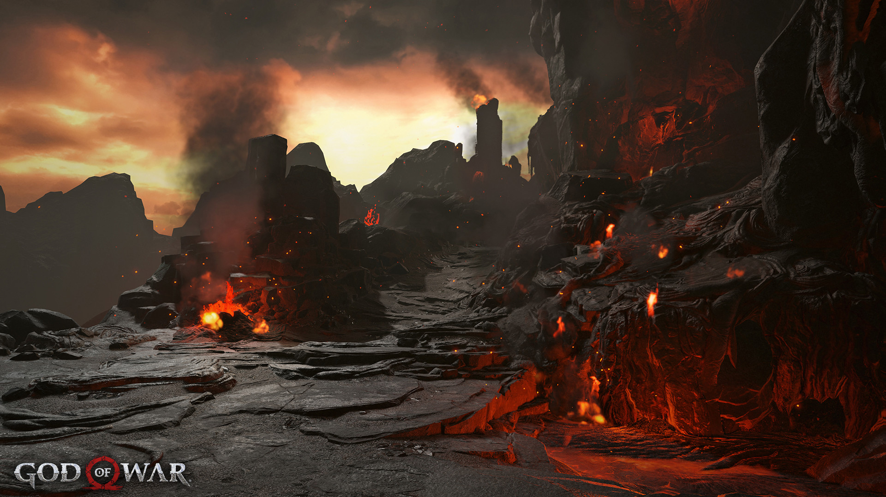
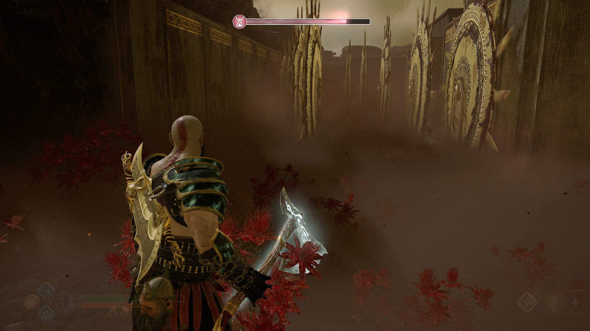
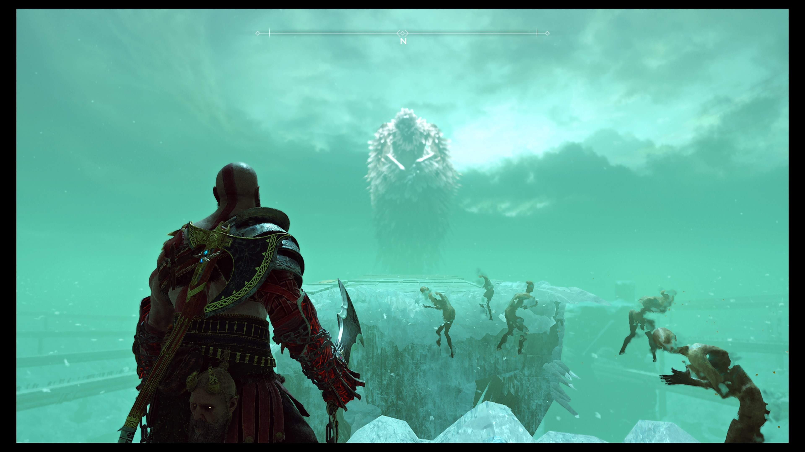
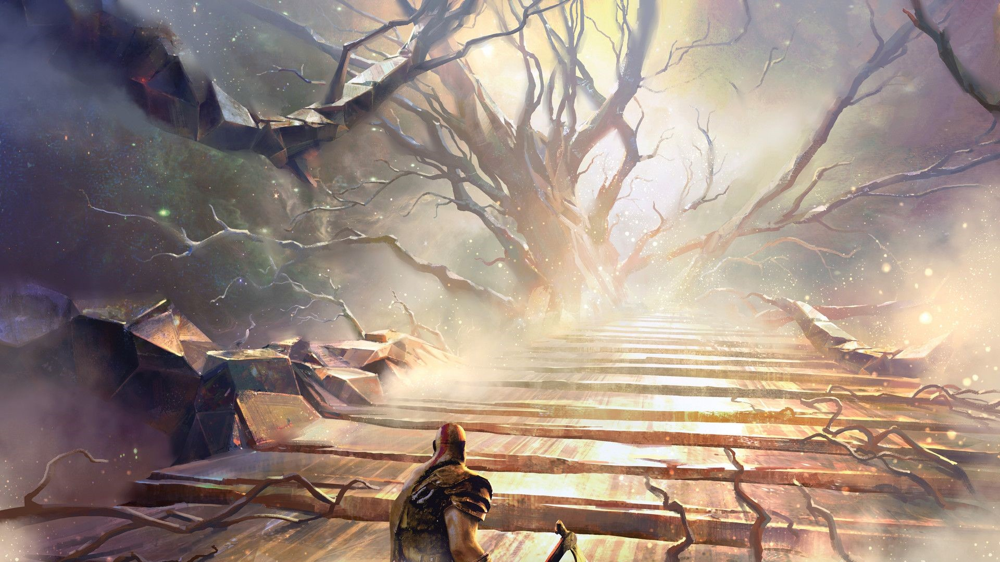

Bevezetés
Történetünk egy spártai hadvezérrel kezdődik ki egy, nagyon véres és megállíthatatlan vendetta által megölte az összes Olümposzi Istent és így sorsára hagyva az emberiséget egy az elemek által durván sújtott világban a remény erejével északra utazik Midgardba. Midgardba utazva új életet kezdett és találkozott egy norvég nővel, Faye-el, akivel gyermekük született, akit Kratos egy bátor spártai harcosról nevezett el, Atreusról, aki mindíg tartotta a lelket katonatársaiban, még a legkilátástalanabb helyzetekben is. A gyeremeket főleg Faye nevelte és Kratossal egy távolságtartó és hideg kapcsolatot alakított ki. A történetünk akkor kezdődik mikor sajnálatos módon Faye, Kratos felesége és Atreus édesanyja, elhagyta Midgardot és lelke megnyugvást talált Alfhiem fényében.
Cselekmény
Miután Faye meghalt, Kratos és Atreus elhamvaztották és utolsó kívánsága érdekében elindultak az utukra hogy felvigyék Faye hanvait a legmagasabb hegy csúcsára. De mielőtt elindultak volna egy furcsa idegen kopogott Kratos ajtaján és miután kettőjük között kitört egy hatalmas párbaj melyben Kratos nyertesként kerül ki, Atreussal elindulnak útjukra az események után. Az úton a hegy felé rendkívül sok veszéllyel néznek szembe, még a legendás Világkígyóval és egy furcsa törp testvérpárral Brokkal és Sindrivel is találkoznak. A legfontosabb személy kinek a társaságában kerülnek az egy erdeji boszorkány ki később kiderül hogy nem más mint Freya, a ván istennnő és Odin felesége. Útjaik során Alfhiemba kell menniük, ahol meg kell szerezniük Alfhiem fényét, hogy feljussanak a hegyre, de előtte el kell rendezniük a háborút a fény és a sötét tündék között. Mielőtt felérnek a hegy tetejére egy hatalmas és rettentő sárkánnyal is megküzdenek és mint bármelyik másik harcból, ebből is győztesen kerülnek ki. Mikor felérnek a hegy tetejére találkoznak három ismeretlen alakkal, kik nem mások mint Baldur, Magni és Modi, az áz istenek kik éppen Mimirt, a mindentudót hallgatják ki, hogy tudja-e, hogy hogy tudnak eljutni Jotunheimbe, az óriások birodalmába melynek kapuját az óriások, Tyr a háború istene segítségével elrejtettek még évtizedekkel az előtt, hogy a történetünk elkezdődött volna. Miután a három alak elment, Kratos és Atreus beszélt Mimirrel és a mindentudó felajánlottta segítségét a ténylegesen legmagasabb hegy elérésében ami Jotunheimben van. Ezek után a trio felülkerekedik már már lehetetlen szituációkon, elutaznak birodalmakat és megküzdenek Magnival és Modival mikor is Kratos megöli Magnit Thor kedvenc fiát. Mikor a vég már csak egy karnyújtára lenne Atreus megbetegszik és Kratos átverekszik egész Helheimon hogy megszerezze az őrző szívét aminek segítségével meggyógyíthatja fiát. A történtek alatt Kratos és Atreus egy igazi apa fia párossá válnak kik megértik és kimutatják érzéséiket, nem elrejtik azokat. És mikor végre elértek Jotunheim kapujához Baldur tönkretette azt és elragatta Atreust hogy Asgardba vigye amit apja Kratos nem hagyott. A harc közben Helheimba teleportálta őket a Bifrost, a szivárványhíd, mely összeköti a kilenc birodalmat. Miután kikeveredtek Helheimből volt egy utolső leszámolásuk Baldurral, melyben Kratos megölte a halhatatlannak hitt Istent és megállította abban hogy megölje édesanyját, az erdei boszorkányt, Freyát.
A bejárt birodalmak
-

Alfheim
-

Midgard
-

Muspelheim
-

Nilfheim
-

Helheim
-

Jötunheim
Befejezés
Miután megtörtént a végső összecsapás Baldurral, Kratos és Atreus eljutnak Jotunheimbe hol, megtudják hogy Faye, Atreus édesannyja egy óriás volt és tudta hogy, ide fognak az utuk végén kilyukadni és hogy együtt képesek mindezt megtenni. Mikor a hegy csúcsára érnek egy szívbemarkoló elköszönéssel kiöntik szerettük hamvait és egy végső búcsút vesznek tőle. Ezek után a páros visszatér otthonukban ahol, egy furcsa látomás közepette Kratos találkozik Thor-al. A játék története itt ér véget mit remélhetően a legujjabb rész tovább visz majd.